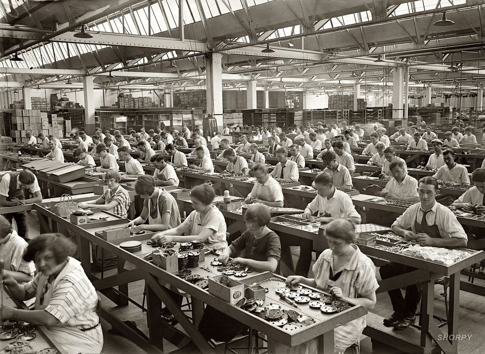

Tumutukoy sa pagproseso ng mga hilaw na materyal at paggawa ng mga produkto na kinakailangan para sa pampublikong pamilihan
Naglalayong maiproseso ang mga hilaw na materyal upang makabuo ng produkto na ginagamit ng tao

Kalagayan ng ekonomiya na nagpapakita ng kapasidad at kakayahan ng bansa na makalikha ng maraming produkto mula sa hilaw na materyal ng agrikultura na tutugunan sa pangangailangan ng lokal na pamilihan at pamilihan sa labas ng bansa.